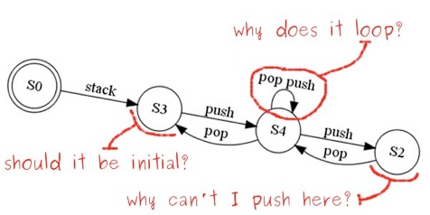
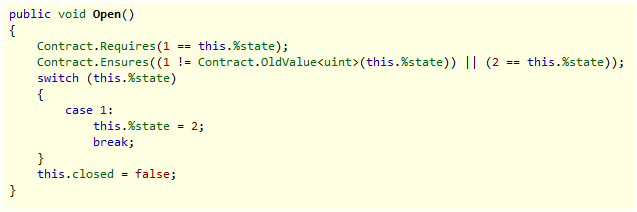
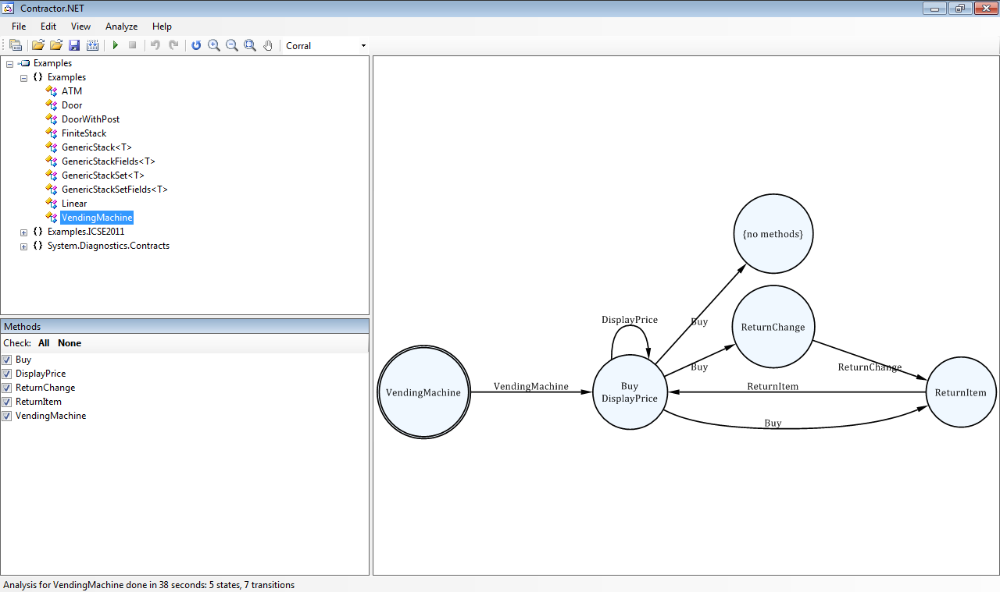

Contractor.NET is an automated tool that takes a piece of software and generates a finite abstract representation of it. By analysing the resulting finite machine, the user can discover potential anomalies in the input contract such as invariants, preconditions or postconditions that are too weak, therefore allowing unwanted behaviour.

It allows the user to augment the original contract specification for the input class with the inferred typestate information, therefore enabling the verification of client code.

